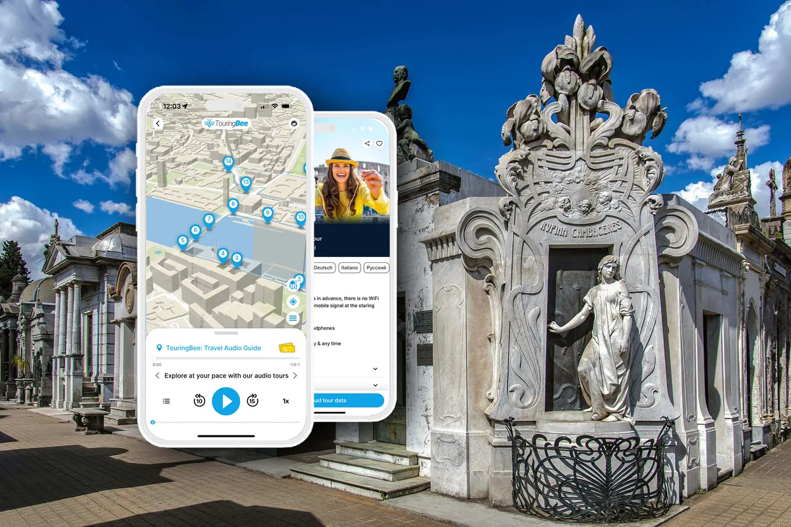

Réponse courte : oui, pour la plupart des gens, à condition de bien s'y prendre. Le cimetière de Recoleta est le seul endroit de Buenos Aires où toute l'histoire de la ville se tient devant vous, en marbre — des présidents, des généraux, des prix Nobel, un boxeur, un gardien, Eva Perón — dans un carré clos de murs que l'on traverse en dix minutes. C'est aussi un site très facile à visiter de travers : on paie le billet, on trouve Evita, on prend la photo, on se perd, et on ressort au bout de quarante minutes en se demandant pourquoi tant de bruit. Ce qui sépare les deux expériences, ce n'est pas le cimetière. C'est le fait d'être entré avec un plan, ou sans.
Cette page, c'est la version sans filtre. D'abord le pour et le contre, puis qui peut s'en passer, puis les douze choses que les visiteurs nous disent avoir regretté de ne pas savoir. Si vous décidez d'y aller, notre guide complet donne tout le détail pratique, et l'audioguide TouringBee est le plan : 22 étapes sur une carte hors ligne, chaque histoire commence devant la porte.
Pourquoi y aller
- C'est un musée à ciel ouvert, pas un simple cimetière. Quelque 4 600 caveaux familiaux sur cinq hectares et demi, bâtis entre 1822 et les années 1930 par des familles qui rivalisaient à coups de marbre de Carrare, de bronze et de vitraux ; plus de quatre-vingt-dix sont classés monuments historiques nationaux. Notre article sur l'architecture explique ce que vous avez sous les yeux.
- C'est l'histoire de l'Argentine en un seul îlot. Au moins dix-huit présidents, les généraux de l'indépendance, deux prix Nobel, et une dépouille que l'on s'est disputée pendant des décennies. Vous pouvez lire qui est qui avant d'y aller.
- C'est central et ça prend peu de temps. Dix minutes à pied de la station Las Heras sur la ligne H, à côté d'une basilique gratuite, d'un parc et d'une foire le week-end. Quatre-vingt-dix minutes suffisent pour bien faire ; quarante-cinq pour l'essentiel.
- C'est magnifique en photo. La lumière rasante du matin, des chats sur les toits, des anges de pierre sur fond de ciel, une jeune fille en bronze devant une porte entrouverte.
- Les histoires sont vraies. Le cercueil de Rufina, Liliana et son chien, le gardien qui a économisé pour sa propre tombe, les obsèques de 1863 qui ont retiré le cimetière à l'Église — et la plupart sont documentées, ce qui est plus rare qu'on ne le croit pour un lieu aussi célèbre. Notre page sur les légendes sépare le vrai de ce que les guides enjolivent.
Pourquoi hésiter
- C'est payant, désormais. Depuis 2022, les non-résidents paient un billet d'entrée (environ 24 000 ARS en 2026, soit à peu près un déjeuner dans un restaurant correct, indexé sur l'inflation). Les résidents entrent gratuitement. Tous les détails sur notre page billets.
- Sans contexte, ce sont quarante minutes de belle pierre. Peu de panneaux, des allées qui se ressemblent toutes, et les visites gratuites de la Ville se font uniquement en espagnol. Sans guide, sans audioguide, ni même un parcours imprimé, vous verrez Evita et pas grand-chose d'autre.
- Il y fait chaud l'été et il y a foule en milieu de matinée. De la pierre, pas d'ombre, et les groupes en autocar entre 10:30 et 13:00. Notre guide du meilleur moment explique pourquoi 9:00 change tout.
- Certains n'aiment tout simplement pas les cimetières. C'est une raison tout à fait valable. En plein jour, rien de morbide — on se croirait dans une petite ville très ornée — mais c'est un cimetière en activité, avec des obsèques et des familles, et vous y êtes un invité.

Écoutez les histoires devant les tombes elles-mêmes
22 étapes · ~1 h 30 · carte hors ligne — €9.99, un seul paiement, sans abonnement.
Obtenir l'audioguideQui peut s'en passer
Soyez honnête avec vous-même sur trois points. Si vous avez moins d'une heure en tout à Recoleta, préférez la basilique (gratuite), le gomero et un café à La Biela ; un cimetière au pas de course, c'est la pire version qui soit. S'il fait 35 °C à 13:00, revenez demain à 9:00 ou choisissez un musée. Et si vous voulez seulement la photo d'Evita, vous pouvez l'avoir en quinze minutes et repartir — sachez simplement que le billet coûte le même prix pour quinze minutes que pour quatre-vingt-dix, et que ce sont les quatre-vingt-dix qui comptent.
12 choses que les visiteurs auraient aimé savoir avant
- Allez-y à 9:00. L'entrée touristique ouvre à 9:00 tous les jours ; la lumière est rasante, les allées sont vides, et vous arrivez devant Evita avant les autocars. À 11:00, ce n'est plus le même endroit.
- Achetez le billet avant d'arriver. Il se vend en ligne sur la page officielle de la Ville ; en l'achetant à l'avance, vous entrez directement au lieu de faire la queue devant une borne. Un billet, pas de créneau horaire, entrée à tout moment jusqu'à 17:00.
- Les résidents entrent gratuitement ; tous les autres paient, enfants compris. Prenez votre DNI si vous êtes résident. Le billet est le même que vous restiez quinze minutes ou trois heures.
- Evita repose dans une allée latérale, et le nom sur la porte est Duarte. Pas Perón. Suivez les fleurs et le petit attroupement, ou la carte de l'audioguide. Notre article sur Evita donne l'itinéraire pas à pas.
- Vous allez vous perdre. Repérez-vous au Christ. Le grand crucifix blanc au croisement des avenues principales, c'est votre boussole. Dès que vous êtes perdu, rejoignez l'allée la plus large et suivez-la jusqu'à le retrouver. Photographiez les carrefours après chaque étape.
- Téléchargez avant d'entrer. Le réseau est capricieux entre les murs de marbre. L'audioguide fonctionne hors ligne ; une carte téléchargée aussi. Téléchargez sur le Wi-Fi de l'hôtel, puis partez.
- Il n'y a pas d'ombre et la pierre renvoie la chaleur. De l'eau, un chapeau, des chaussures plates — le pavage est ancien et irrégulier. En été, c'est une visite du matin, point.
- Les visites gratuites sont en espagnol. Toutes les heures depuis le portail principal (en semaine à partir de 10:00, le week-end à partir de 9:00). En anglais, c'est payant, ou bien en autonomie avec un audioguide.
- Levez les yeux et regardez à travers. Le meilleur se trouve au-dessus de la hauteur des yeux ou derrière une vitre : vitraux, coupoles en mosaïque, escaliers en colimaçon qui descendent sur deux ou trois niveaux. Servez-vous du zoom de votre téléphone, pas de la poignée de la porte.
- Lisez les portes. Sablier, chouette, torche renversée, serpent qui se mord la queue : chaque symbole est une phrase sur la famille qui repose derrière. Apprenez-en cinq sous le portique d'entrée et tout le cimetière devient lisible.
- C'est un cimetière en activité. Si un enterrement ou une famille occupe une allée, passez d'abord à une autre étape et revenez plus tard. N'entrez pas dans les caveaux ouverts, ne touchez pas au bronze, parlez bas dans les allées latérales.
- Prévoyez la sortie. La basilique voisine est gratuite et mérite dix minutes ; la foire artisanale du samedi–dimanche remplit la Plaza Francia ; La Biela et le gomero géant sont à deux minutes du portail. Notre page que faire à Recoleta détaille la demi-journée complète.

Combien de temps ça prend, vraiment
| Vous avez | Faites ceci | Vous verrez |
|---|---|---|
| 15 minutes | Portail → Christ central → Evita → sortie | La photo. Pas grand-chose d'autre. |
| 45 minutes | L'essentiel : le portail, l'amiral Brown, Liliana, Rufina, Evita, le gardien, le boxeur | Les quatre styles, les deux grandes légendes, la tombe la plus demandée et la plus humaine |
| 90 minutes | Le parcours complet en 22 étapes, avec les histoires | Le cimetière tel qu'il a été conçu pour être vu : une ville, rue par rue |
| Une demi-journée | Cimetière à 9:00, basilique, café à La Biela, la foire, la Floralis | Le quartier de Recoleta, pas seulement l'enceinte |
De ma propre visite
J'ai failli faire la visite de travers. Je suis entré, j'ai trouvé la foule devant le caveau Duarte, j'ai pris la photo, et je me suis retrouvé dans une allée qui ressemblait à toutes les autres en me demandant si c'était tout. Ce qui a sauvé la visite, c'est de ralentir : la lumière de neuf heures du matin qui passe au-dessus du mur depuis Junín ; un chat endormi sur le toit d'un caveau ; une fenêtre brisée à travers laquelle j'ai vu un escalier en colimaçon descendre dans le noir, et les cercueils au niveau inférieur. Personne ne m'avait dit que les caveaux étaient des bâtiments avec un sous-sol. Après ça, j'ai lu chaque porte autrement, et la visite de quarante minutes est devenue une matinée.
Le verdict
Allez-y, à 9:00, avec un plan. Le billet coûte le prix d'un déjeuner et le lieu ne ressemble à rien d'autre de ce que vous verrez dans la ville. La seule façon de gâcher la visite, c'est d'entrer à l'aveugle — et c'est justement l'erreur la plus facile à éviter.
Audioguide du cimetière de RecoletaAccès immédiat
- 100 % hors ligne — ni Wi-Fi ni données mobiles nécessaires dans le cimetière
- Carte hors ligne avec le parcours — vous lancez chaque récit vous-même, devant la tombe
- Langues de l'audio : anglais, espagnol, français, italien, russe
- Fonctionne sur iOS & Android
- 22 étapes, environ 1 h 30 à votre rythme
Le plan, prêt à suivre : Obtenir l'audioguide — 22 étapes · hors ligne · €9.99
Questions fréquentes
Le cimetière de Recoleta vaut-il la visite ?
Pour la plupart des visiteurs de Buenos Aires, oui : c'est un musée à ciel ouvert de 4 600 caveaux familiaux, la tombe d'Eva Perón et deux siècles d'histoire argentine, à quelques minutes du centre-ville à pied ou en métro. La visite vaut moins si vous entrez sans plan — la plupart des gens voient Evita et ressortent au bout de quarante minutes.
Combien de temps prévoir au cimetière de Recoleta ?
Quarante-cinq minutes pour l'essentiel (le portail, l'amiral Brown, Liliana, Rufina, Evita, le gardien, le boxeur), environ quatre-vingt-dix minutes pour le parcours complet en 22 étapes, une demi-journée si vous ajoutez la basilique, la foire du week-end et un café à La Biela.
Le cimetière de Recoleta est-il gratuit ?
Pas pour les visiteurs étrangers : le billet d'entrée pour les non-résidents coûte environ 24 000 ARS en 2026 — à peu près un déjeuner dans un restaurant correct — et il est réajusté plusieurs fois par an. Les résidents argentins entrent gratuitement sur présentation de leur DNI ; les enfants étrangers paient.
Le cimetière de Recoleta convient-il aux enfants ?
Étonnamment, oui, à partir de six ans environ : c'est en plein air, il y a des chats à repérer, des portes à déchiffrer et la statue d'un chien. En dessous de six ans, ils s'ennuient vite ; les allées sont pavées mais irrégulières, donc une poussette passe sur les grandes avenues et peine dans les allées latérales étroites.
Visiter le cimetière de Recoleta, est-ce glauque ou irrespectueux ?
C'est un cimetière en activité, mais la visite est encouragée — la Ville vend les billets et organise des visites guidées. En plein jour, rien d'inquiétant : on se croirait dans une petite ville silencieuse et très ornée. Laissez passer les cortèges et les familles, et parlez bas dans les allées latérales.
Le cimetière de Recoleta ou Chacarita ?
Recoleta pour une première visite : compact, central, les grands noms. Chacarita est bien plus vaste et moins léchée, avec la tombe de Gardel et presque aucun touriste ; allez-y si vous avez déjà vu Recoleta et que vous voulez le cimetière de toute la ville plutôt que celui de son élite.
Poursuivre la visite
Certains liens de cette page sont des liens d'affiliation (GetYourGuide, Booking.com, TouringBee). Si vous réservez via ces liens, nous pouvons toucher une petite commission — sans surcoût pour vous. Cela n'influence jamais nos recommandations. Voir notre Information sur l'affiliation.